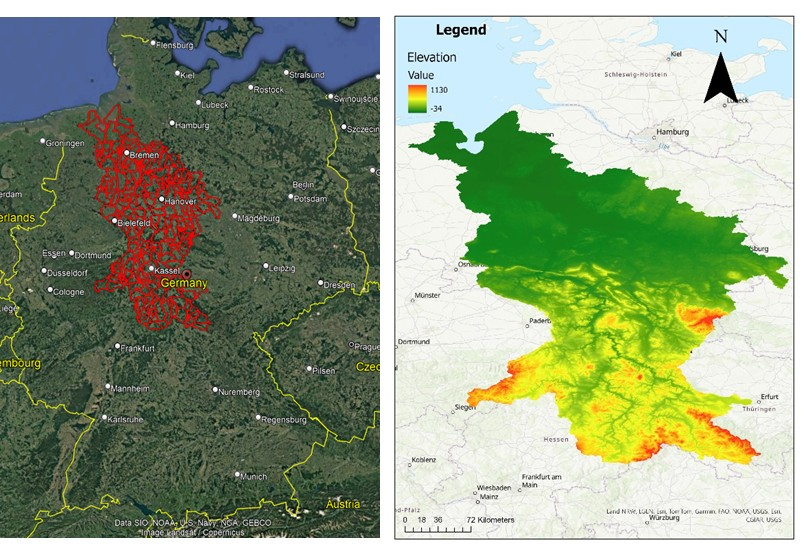
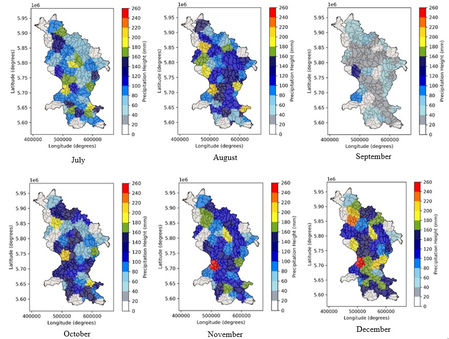
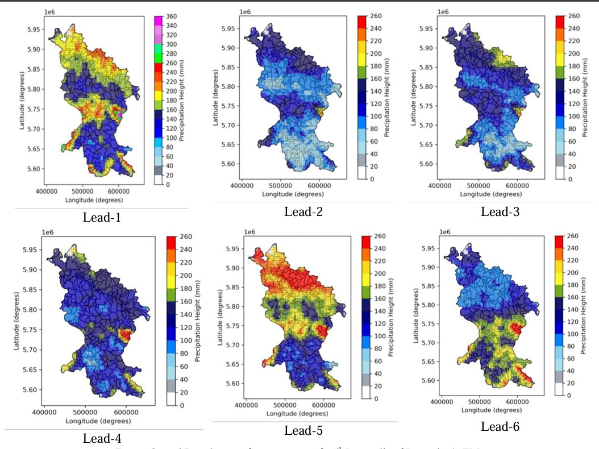

DWD Seasonal Ensemble Forecast — Weser River Basin
Investigations into the DWD Seasonal Ensemble Forecast for the Weser River Basin — Flood 2023/24
| Institution | Institut für Hydrologie und Wasserwirtschaft, Leibniz Universität Hannover |
| Course | Hydrological Extremes — Seminar Research Project |
| Submitted | October 2024 |
| Supervisor | Zoë Bovermann, M.Sc. |
| Tools | Python (GeoPandas, Matplotlib, Shapely, Wetterdienst), ArcGIS Pro, Excel |
| Study Area | Weser River Basin, Northern Germany (47,394 km²) |
| Study Period | July 2023 – December 2023 |
Overview
The winter of 2023/24 brought severe flooding to Northern Germany, with the Weser River Basin among the most heavily affected regions. This solo research project evaluated how well the Deutscher Wetterdienst (DWD) ICON-ALO seasonal ensemble forecast system — generating 50 Ensemble Members (EM) — predicted the extreme precipitation that drove these floods.
The study covers the critical six-month window from July to December 2023, assessing forecast skill using four statistical metrics: Percentage Bias (PBias), Relative Standard Error (RSE), Mean Error (ME), and Correlation Coefficient (COR).
A key research contribution is the evaluation of higher-percentile ensemble outputs as early-warning tools for extreme events. The 95th percentile of the EM forecast was capable of signalling the December 2023 flood event up to 7 months in advance (Lead-6). Observed precipitation data from 60 DWD rain gauge stations was spatially interpolated using Voronoi polygons to match the 5 km × 5 km ensemble grid using Python (GeoPandas, Shapely, Matplotlib).

Key Findings
- The mean ensemble adequately predicted average months (July PBias = −0.32, August = −0.14) but systematically underestimated extreme events — December PBias = −0.51.
- September produced a severe outlier — ensemble dramatically overestimated dry conditions (PBias = +1.70), a key structural limitation.
- The 95th percentile achieved near-zero PBias for November (0.03) and December (−0.009) at Lead-1 — the most operationally useful metric for flood risk.
- Most significantly: 95th percentile at Lead-6 achieved PBias = −0.09 — a 7-month advance signal of the December flood event.
- Individual member EM-14 outperformed the mean ensemble in PBias and Mean Error for December.
| Month | Mean PBias | 25th Pctile | 75th Pctile | 95th Pctile |
|---|---|---|---|---|
| July | −0.32 | −0.55 | −0.12 | 0.20 |
| August | −0.14 | −0.34 | 0.01 | 0.32 |
| September | 1.70 | 0.80 | 2.51 | 3.89 |
| October | 0.08 | −0.30 | 0.37 | 1.00 |
| November | −0.40 | −0.62 | −0.25 | 0.03 |
| December | −0.51 | −0.66 | −0.42 | −0.009 |


Conclusion
Seasonal ensemble forecasting using the 95th percentile is a valid and operationally actionable flood early-warning tool for the Weser Basin. A formalised monitoring protocol with defined action thresholds at each lead time linked to specific infrastructure responses would substantially improve flood preparedness.
Long-term structural investment in reservoir expansion and channel improvement, informed by ensemble early warning, remains the most durable path to flood resilience in the northern Weser lowlands.